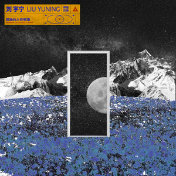

{% load static %}
胡萝卜
{% include 'navbar.html' %}
<
>
最近在听
木偶人
来自天堂的魔鬼
你的酒馆对我打了烊
年少有为
You Need To Calm Down
晚婚
绿色
巅峰歌榜
热门歌曲
为你推荐
最多人听
新歌首发
薛之谦-木偶人
来自天堂的魔鬼
你的酒馆对我打了烊
李荣浩-年少有为
YouNeedToCalmDown
隔壁老樊-晚婚
陈雪凝-绿色
王贰浪-像鱼

孤独的人在哪里
金志文-剥落的时间
焦迈奇-我的名字
陈粒-多多留意
吴亦凡-大碗宽面
FeintVeela-Vagrant
OwlCity-Blues
ShawnMedes-Señorita
Owakri-Uppo
김청하-Chica
RADWIMPS-前前前世
OWakri-Mirage
冯希瑶-尘埃 (Live)
简弘亦-说好的幸福
NeverReallyOver
DJokwari-Sakura
霍尊-庄周
王源-滚烫的青春
いつも何度でも
评论区
合作网站跳转
500x500
 薛之谦-木偶人
薛之谦-木偶人
 李荣浩-年少有为
李荣浩-年少有为


评论区